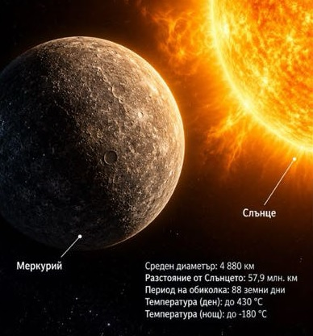
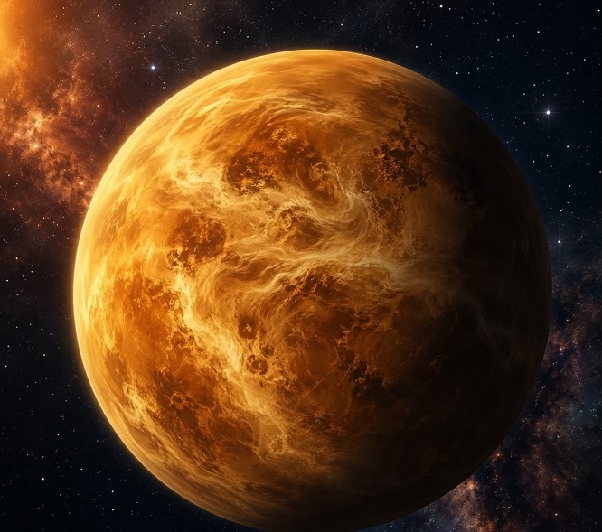
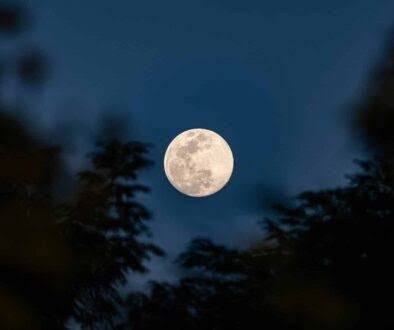
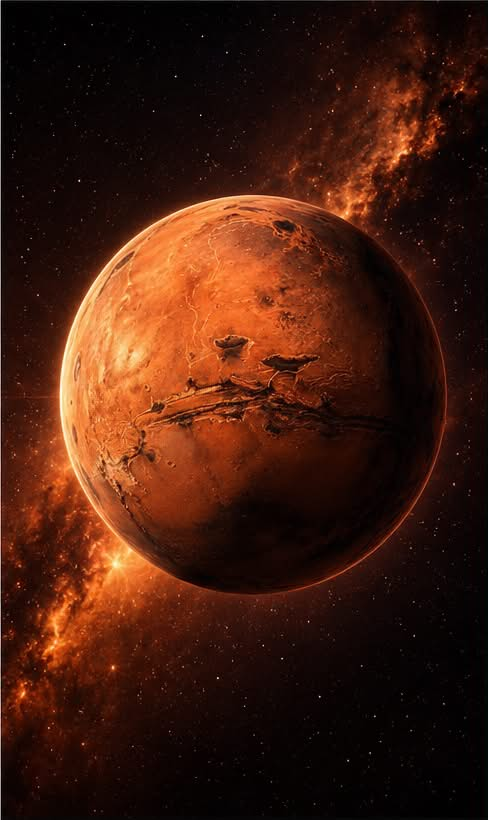
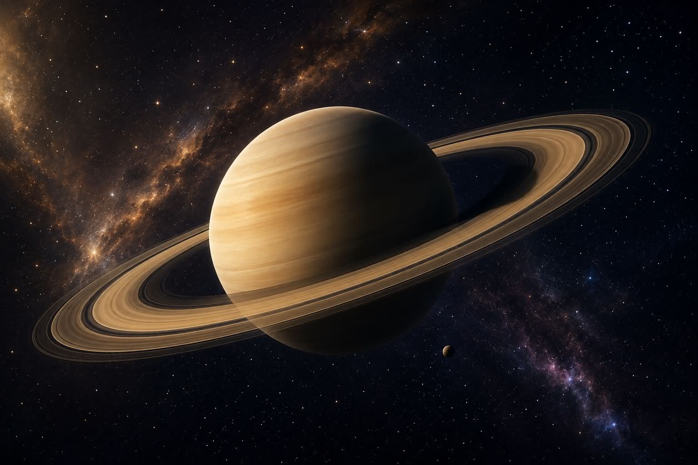
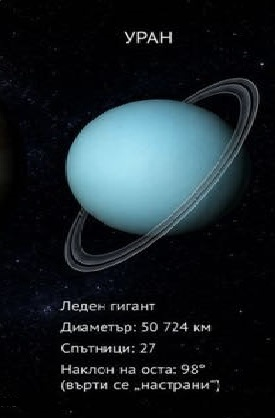
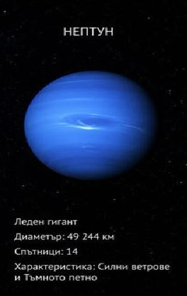
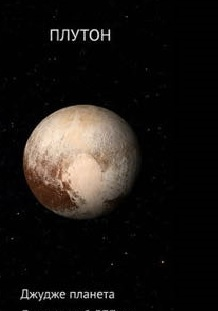
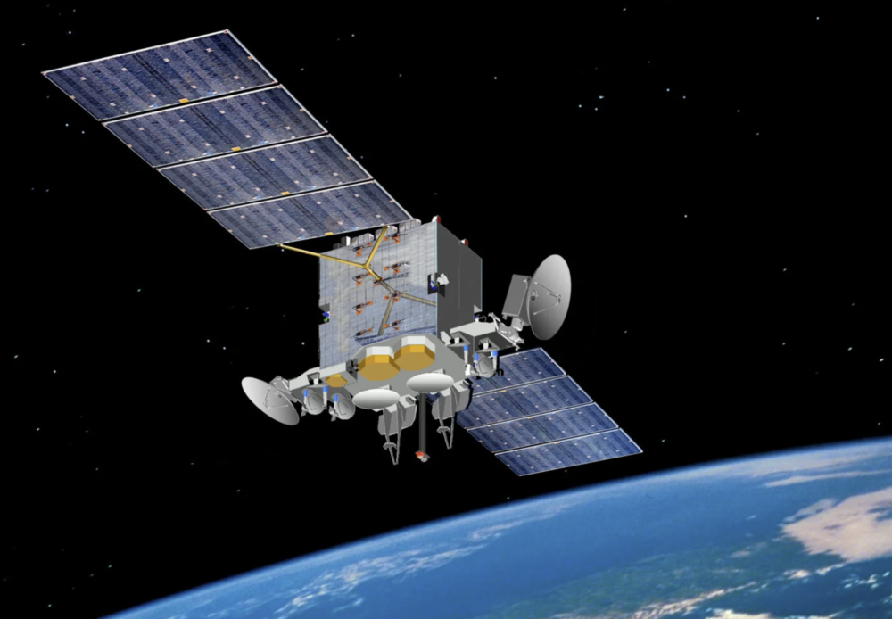

<!DOCTYPE html>
<html lang="bg">
<head>
  <meta charset="UTF-8">
  <title>Анимиран GIF със CSS</title>
  <style>
    @keyframes moveRight {
      0% {
        transform: translateX(0);
      }
      100% {
        transform: translateX(300px);
      }
    }

    .sun-gif {
      width: 128px;
      animation: moveRight 3s ease-in-out infinite alternate;
    }
  </style>
</head>

</html><!DOCTYPE html>
<html lang="bg">
<head>
    <meta charset="UTF-8">
    <meta name="viewport" content="width=device-width, initial-scale=1.0">
    <title>Слънчева система</title>
    <style>
        body {
            font-family: 'Segoe UI', Tahoma, Geneva, Verdana, sans-serif;
            margin: 0;
            padding: 0;
            background-color: #eeccff;
            line-height: 1.6;
        }

        h1 {
            text-align: center;
            color: #2c3e50;
            font-size: 2.5em;
            margin: 20px 0;
            text-shadow: 2px 2px 4px rgba(0,0,0,0.1);
        }

        .main-container {
            display: flex;
            max-width: 1400px;
            margin: 0 auto;
            gap: 20px;
            padding: 20px;
        }

        .sidebar {
            width: 300px;
            background: linear-gradient(135deg, #f5f5f5 0%, #d3d3d3 50%, #ffffff 100%);
            border: 1px solid #ccc;
            border-radius: 10px;
            padding: 20px;
            box-shadow: 0 4px 8px rgba(0,0,0,0.1);
        }

        .sidebar h2 {
            color: #2c3e50;
            font-size: 1.3em;
            margin-bottom: 15px;
            border-bottom: 2px solid #3498db;
            padding-bottom: 5px;
        }

        .sidebar img {
            width: 100%;
            max-width: 200px;
            height: auto;
            border: 3px solid #34495e;
            border-radius: 8px;
            margin: 10px 0;
            display: block;
        }

        .content {
            flex: 1;
            background: #ffffff;
            border-radius: 10px;
            padding: 30px;
            box-shadow: 0 4px 8px rgba(0,0,0,0.1);
        }

        .test-section h1 {
            color: #e74c3c;
            font-size: 2em;
            margin-bottom: 30px;
        }

        .question {
            background: #f8f9fa;
            border-left: 4px solid #3498db;
            padding: 15px;
            margin: 20px 0;
            border-radius: 0 8px 8px 0;
        }

        .question b {
            color: #2c3e50;
            display: block;
            margin-bottom: 10px;
        }

        .options {
            margin-left: 20px;
        }

        .comets-asteroids {
            background: #ecf0f1;
            border-radius: 10px;
            padding: 20px;
            margin: 30px 0;
        }

        .comets-asteroids table {
            width: 100%;
            border-collapse: collapse;
        }

        .comets-asteroids td {
            padding: 15px;
            vertical-align: top;
        }

        .comets-asteroids img {
            width: 120px;
            height: 180px;
            object-fit: cover;
            border: 3px solid #34495e;
            border-radius: 8px;
            margin-right: 15px;
        }

        .navigation {
            background: #34495e;
            color: white;
            padding: 15px;
            text-align: center;
            border-radius: 8px;
            margin: 20px 0;
        }

        .navigation a {
            color: #3498db;
            text-decoration: none;
            margin: 0 10px;
            padding: 5px 10px;
            border-radius: 4px;
            transition: background-color 0.3s;
        }

        .navigation a:hover {
            background-color: #2c3e50;
        }

        .planet-info {
            background: #fff;
            border: 1px solid #ddd;
            border-radius: 8px;
            margin: 15px 0;
            overflow: hidden;
        }

        .planet-info td {
            padding: 15px;
        }

        .temperature {
            color: #e74c3c;
            font-weight: bold;
        }

        .planet-name {
            font-size: 1.2em;
            font-weight: bold;
            color: #2c3e50;
            margin-top: 10px;
        }

        @media (max-width: 768px) {
            .main-container {
                flex-direction: column;
            }
            
            .sidebar {
                width: 100%;
            }
        }
    </style>
</head>
<body>
    <h1>Слънчева система</h1>
    
    <div class="navigation">
        <a href="zad32.html">История на физиката</a> |
        <a href="zad60.html">Речник</a> |
        <a href="Upr1.html">Начало</a>
    </div>

    <div class="main-container">
        <!-- Лява странична лента - Планети от земен тип -->
        <div class="sidebar">
            <h2>Планетите от земен тип: Меркурий, Венера, Земя, Марс</h2>
            <p>Тези планети имат малко спътници: общо 3 (Луна, Деймос и Фобос). Те имат сравнително висока температура:</p>
           <p><strong>Характеристики:</strong></p>
            <ul>
                <li>Плътност: около 5 g/cm³</li>
                <li>Бавно въртене около осите си</li>
                <li>Най-бързо се върти Земята</li>
            </ul> 
            <div class="planet-info">
                
              
                <p>Температура: <span class="temperature">от -180°C до +430°C</span></p>
                <p>Планетата Меркурий  на фона на Слънцето</p>
            </div>

            <div class="planet-info">
                
                <div class="planet-name">Венера</div>
                <p>Температура: <span class="temperature">470°C</span> (поради парниковия ефект)</p>
                <p>Венера е на разстояние два пъти по-голямо отколкото Меркурий спрямо Слънцето, а има близо три пъти по-висока температура. Защо?</p>
            

        </div>

            <div class="planet-info">  
                <div class="planet-name">Земя и Луна</div>
               
 <p>Средна температура на Земята: <span class="temperature">10-13°C</span></p>
            </div>

            <div class="planet-info">
                
                <div class="planet-name">Марс</div>
                <p>Планетата Марс изглежда като червена звезда, затова древните хора са я нарекли на бога на войната.</p>
                <p>Нейните два спътника Деймос и Фобос (страх и ужас) са наречени на синовете на бога на войната.</p>
                
                <div class="planet-name">Марсоход</div>
            </div>

            
        </div>

        <!-- Централно съдържание -->
        <div class="content">
            <div class="test-section">
                <h1>Тест №26</h1>

                <div class="question">
                    <b>Зад.1. Кои сили определят движението на небесните тела в Слънчевата система?</b>
                    <div class="options">
                        а) електрични<br>
                        б) ядрени<br>
                        в) гравитационни<br>
                        г) магнитни
                    </div>
                </div>

                <div class="question">
                    <b>Зад.2. Коя от планетите няма атмосфера?</b>
                    <div class="options">
                        а) Земя<br>
                        б) Венера<br>
                        в) Меркурий<br>
                        г) Юпитер
                    </div>
                </div>

                <div class="question">
                    <b>Зад.3. Къде е разположен астероидният пояс?</b>
                    <div class="options">
                        а) между Земята и Марс<br>
                        б) между Венера и Земята<br>
                        в) между Юпитер и Сатурн<br>
                        г) между Марс и Юпитер
                    </div>
                </div>

                <div class="question">
                    <b>Зад.4. Каква е разликата между метеорите и метеоритите?</b>
                    <div class="options">
                        а) в химичния състав<br>
                        б) в размерите<br>
                        в) едните светят, другите - не<br>
                        г) няма разлика
                    </div>
                </div>

                <div class="question">
                    <b>Зад.5. Коя от изброените планети не е от земната група?</b>
                    <div class="options">
                        а) Венера<br>
                        б) Меркурий<br>
                        в) Уран<br>
                        г) Марс
                    </div>
                </div>

                <div class="question">
                    <b>Зад.6. Коя планета няма твърда повърхност?</b>
                    <div class="options">
                        а) Меркурий<br>
                        б) Юпитер<br>
                        в) Земя<br>
                        г) Марс
                    </div>
                </div>

                <div class="question">
                    <b>Зад.7. Коя планета има най-висока температура?</b>
                    <div class="options">
                        а) Меркурий<br>
                        б) Венера<br>
                        в) Земя<br>
                        г) Сатурн
                    </div>
                </div>

                <div class="question">
                    <b>Зад.8. Коя планета се нарича двойна и защо?</b>
                    <div class="options">
                        а) Земя<br>
                        б) Марс<br>
                        в) Плутон<br>
                        г) Сатурн
                    </div>
                </div>
            </div>

            <div class="comets-asteroids">
                
                   
                        
                       
                            <h3>Опашати звезди - комети</h3>
                            <p>Те представляват безформени големи късове лед, примесен с прах и чакъл. Те идват от далечните външни райони на Слънчевата система и обикалят около Слънцето. Когато наближат Слънцето, ледът на кометата започва да се изпарява. Образува се облак от газ и прах, който прилича на опашка и се носи на хиляди километри в пространството след тях.</p>
                     
                    
                        
                        
                            <h3>Астероиди</h3>
                            <p>Астероидите са големи космически тела (в сравнение с метеорите и метеоритите), изградени от скали. Повечето астероиди се намират в района между Марс и Юпитер, наречен Астероиден пояс.</p>
                        
                    
                
            </div>
        </div>

        <!-- Дясна странична лента - Планети гиганти -->
        <div class="sidebar">
            <h2>Планетите гиганти: Юпитер, Сатурн, Уран и Нептун</h2>
            <p>Тези планети имат:</p>
            <ul>
                <li>Малка плътност (около 1 g/cm³)</li>
                <li>Бързо околоосно въртене (10 часа)</li>
                <li>Ниска температура (под -100°C)</li>
                <li>Много спътници и пръстени</li>
            </ul>

            <div class="planet-info">
                
                <div class="planet-name">Юпитер</div>
                <p>Най-голямата планета от Слънчевата система</p>
            </div>

            <div class="planet-info">
                
                <div class="planet-name">Сатурн</div>
                <p>С най-ясно изразени пръстени</p>
            </div>

            <div class="planet-info">
                
                <div class="planet-name">Уран</div>
            </div>

            <div class="planet-info">
                
                <div class="planet-name">Нептун</div>
            </div>
 <div class="planet-info">
                
                <div class="planet-name">Плутон</div>
            </div>

 <div class="planet-info">
                
                <div class="planet-name">Слънчева система</div>
                <p>Се състои от 8 планети и три планети джуджета: Церера, Плутон, Ерида; спътниците на планетите и малки тела (метеори, метеорити, астероиди и комети)</p>
            </div>
            <div class="planet-info">
                
                <div class="planet-name">Изкуствен спътник</div>
                
            </div>
        </div>
    </div>

    <div class="navigation">
        <a href="zad62.html">Начална страница</a> |
        <a href="zad40.html">Предишен урок</a> |
        <a href="zad51.html">Упътване</a> |
        <a href="zad68.html">Ключ</a> |
        <a href="zad42.html">Следващ</a>
    </div>
</body>
</html>